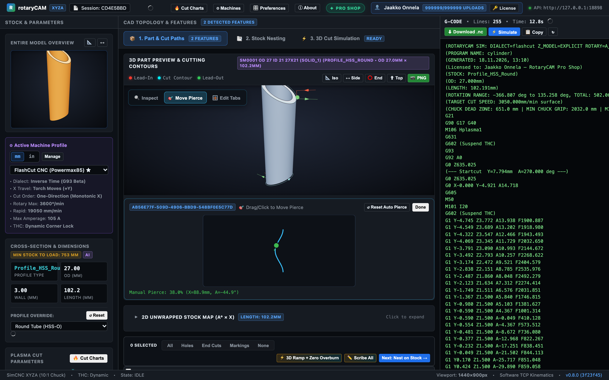
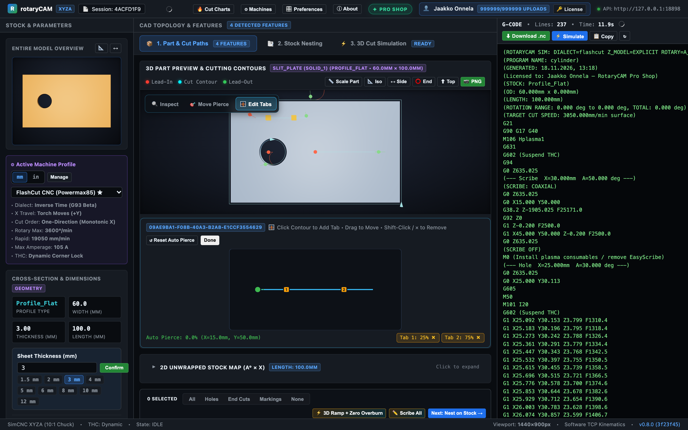
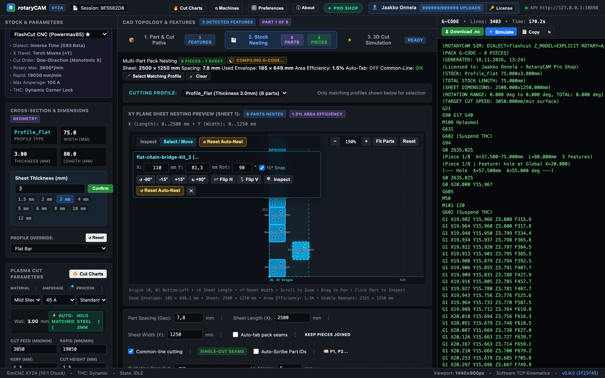

Click or drag on the canvas to move pierces into scrap, place holding tabs along tight contours, nudge 2D sheet parts with live collision halos, and flip or roll 1D rotary tubes along the stick.
TUTORIAL 12 OF 15 • 4 StepsWorkspaces: 3D & 2D Part Canvas • 2D Sheet Nest • 1D Stick StripTiers: Move Pierce (Maker & Pro Shop) • Edit Tabs & Unlimited Nest (Pro Shop)
Dial In Pierces, Holding Tabs & Nest Layouts Directly on the Canvas
Auto-nesting covers most jobs, yet real plate and tube work still calls for quick shop tweaks. Move a pierce away from a tight flange, pin a small bracket with a holding tab, spin a gusset around plate rust, or flip a tube end-for-end without reopening CAD.
Contour TweaksMove Pierce & Edit Tabs
2D Sheet NestΔX/ΔY Drag, 15° Rotate & Halos
1D Stick StripReorder, 180° Flip & ΔA Roll
Step 01
Move Your Pierce Point (Move Pierce, Maker & Pro Shop)
Put pierce craters inside your scrap slug and keep them away from bolt-hole walls:
Click Move Pierce above the 3D preview (next to Inspect and Edit Tabs).
Click or drag along a contour in the 3D preview or 2D map to slide the green and red lead-in markers into scrap.
Your lead-ins and lead-outs update automatically for Single-File and Pack Mode. Click Reset Auto Pierce to revert, or Done to lock it in.
Step 1: Move Pierce editor with 3D marker preview and Reset Auto Pierce🔍 Click image to enlarge

Step 02
Add Holding Tabs (Edit Tabs, Pro Shop)
Stop small cutouts and thin brackets from tipping on the slats or dropping into your chuck mid-cut:
Click Edit Tabs above the 3D preview (or Edit Tabs on Canvas inside a contour's settings).
Click any contour edge to drop a holding tab. Drag tabs along the cut line to clear weld seams and machined faces.
Shift-Click or click the tab's × button to remove it. Your kerf-compensated bridge stays uncut so parts stay anchored until you snap them free.
Step 2: Edit Tabs mode with contour tab placement and posted G-code🔍 Click image to enlarge

Step 03
Drag, Rotate 15° & Flip Nested Sheet Parts
Adjust flat-plate nests right inside Stock Nesting without typing coordinates:
Pick Select / Move on the 2D sheet canvas and drag any part in ΔX, ΔY.
Rotate parts in 15° steps or free angles. Flip horizontally (X) or vertically (Y) to tuck gussets or dodge rusted plate.
Check green and red spacing and edge halos before posting G-code. Click Reset Auto-Nest anytime to restore the auto-nest layout (Maker auto-nests 10 flat / 5 rotary with unlimited manual placement; Pro Shop unlimited auto-nest).
Step 3: 2D sheet Select / Move controls for drag, 15-degree rotation, and flip🔍 Click image to enlarge

Step 04
Reorder, Flip 180° & Roll ΔA on Rotary Sticks
Tune multi-part tube packing along each stick in rotary Pack Mode:
Reorder tubes along the 1D stick strip so short drops sit near the tailstock and heavy parts stay near the chuck.
Flip parts 180° end-for-end and roll phase angle ΔA to point copes and miters for clean torch clearance.
Set part-to-part cut gap per stick while keeping compatible Common-Line sever cuts intact.
Step 4: 1D rotary stick strip controls for reorder, 180-degree flip, and phase roll🔍 Click image to enlarge